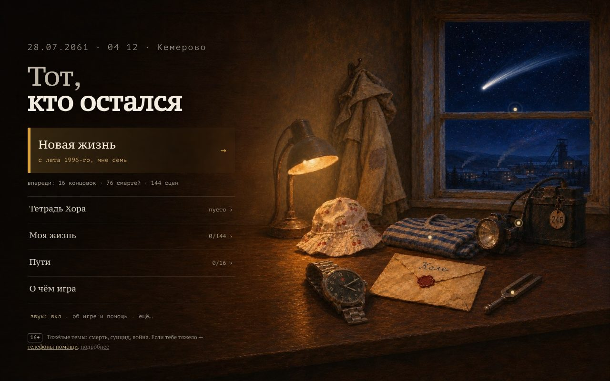
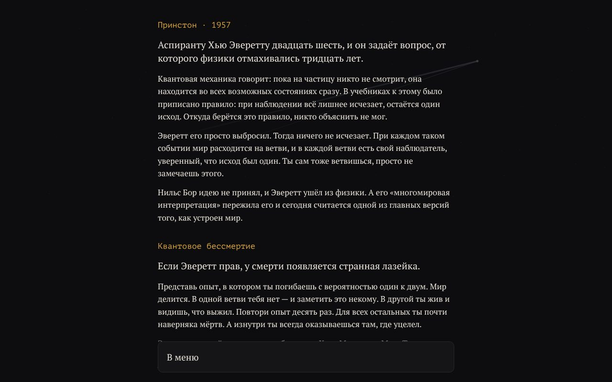
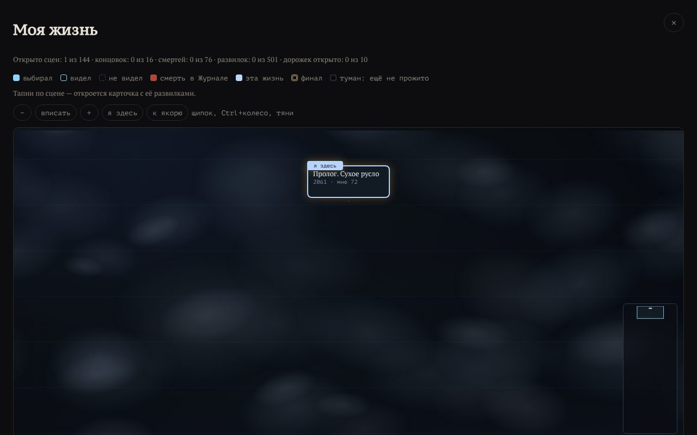
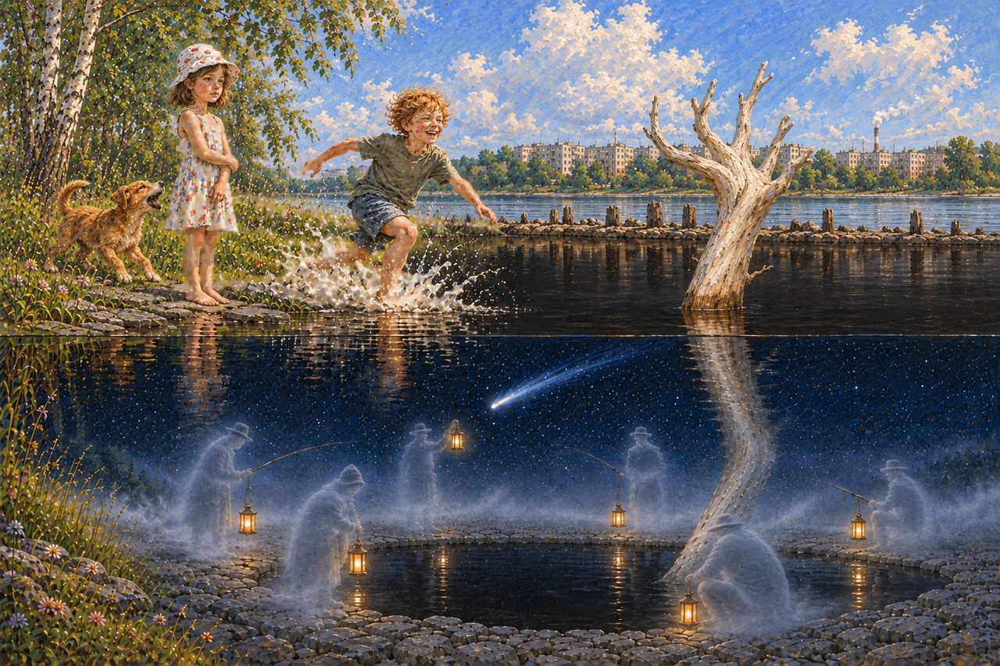

Тот, кто остался
Летом девяносто шестого, когда мне было семь, я утонул в Чёрной заводи на Томи. Четыре минуты пролежал на дне, потом меня вытащили и откачали.
С тех пор умереть насовсем у меня не выходит. Бывало, убьёт меня молнией в горах, и вот я опять стою внизу, туча только собирается, и наверх можно не лезть. А как умирал, помню до последней секунды. Те, кто умер вместо меня, никуда не делись. Они живут у меня в голове и разговаривают, я зову их Хором. Сколько раз я умирал, у них и спрашивайте, они считают лучше.
Жизней было девять. В одной я спускался в шахту, как батя, в другой учился на физфаке в Томске, в третьей таскал за геологами рюкзак по тайге. Связался со Сварным, нырял в Таиланде, лежал в психбольнице, жил в таёжном скиту. А в одной просто женился, работал на «Азоте» и по субботам топил баню.
Случайностей нет. Всё решает твой выбор и то, каким я к тому дню стал. Погиб, значит, ошибся раньше, иногда за год до этого. Только от каждого возврата мир немного съезжает. То у ларька другая вывеска, то у соседки другое отчество.
Сейчас 2061 год, мне семьдесят два. Томь пересохла, по фарватеру гуляют с собаками, а заводь стоит полная до краёв. Учёные из Томска написали, что дна у неё нет.
Дно есть, я на нём лежал.
Текстовый квест от первого лица. 9 жизней, 163 сцены, 81 смерть, 26 концовок. До первого финала часа полтора-два, вся игра займёт часов восемь-десять. Русский и английский. Играть можно прямо в браузере, с телефона или с компьютера. Бесплатно.
English
Scientists from Tomsk spent three summers looking for the bottom of the Black Backwater. Their report says it has none. They could have asked me. It has a bottom. I've lain on it.
July 1996, Kemerovo, Siberia. I was seven. I spent four minutes under the water and came back. Since then I keep dying and not dying: a mine collapse, lightning on a bare summit, a revolver in a basement casino, a burning helicopter. Each time I'm thrown back to the minute where I could still have turned, and I remember everything.
- Death is a clue. What kills you in one life saves you in another.
- Nine lives of one man. Miner, physicist, geologist, a crime boss's errand man, dive instructor in Thailand, a monk in the taiga, a father of two.
- No dice. Everything follows from your choices and who you've become.
- 81 deaths, 26 endings. Your first ending in about two hours, all of them in 8–10.
For readers of Kate Atkinson's Life After Life and players of Outer Wilds. Fully translated; switch the language on the title screen.
Подробнее
| Статус | Released |
| Платформы | HTML5 (браузер, телефон и компьютер) |
| Автор | — |
| Жанр | Interactive Fiction |
| Языки | Русский, English |
| Управление | Мышь, клавиатура, сенсорный экран |
| Длина | Несколько часов |
| ИИ | Отмечено: при создании использован генеративный ИИ |
| Теги | Interactive FictionText basedChoices MatterMultiple EndingsStory RichPsychologicalSci-fiAtmospheric |





